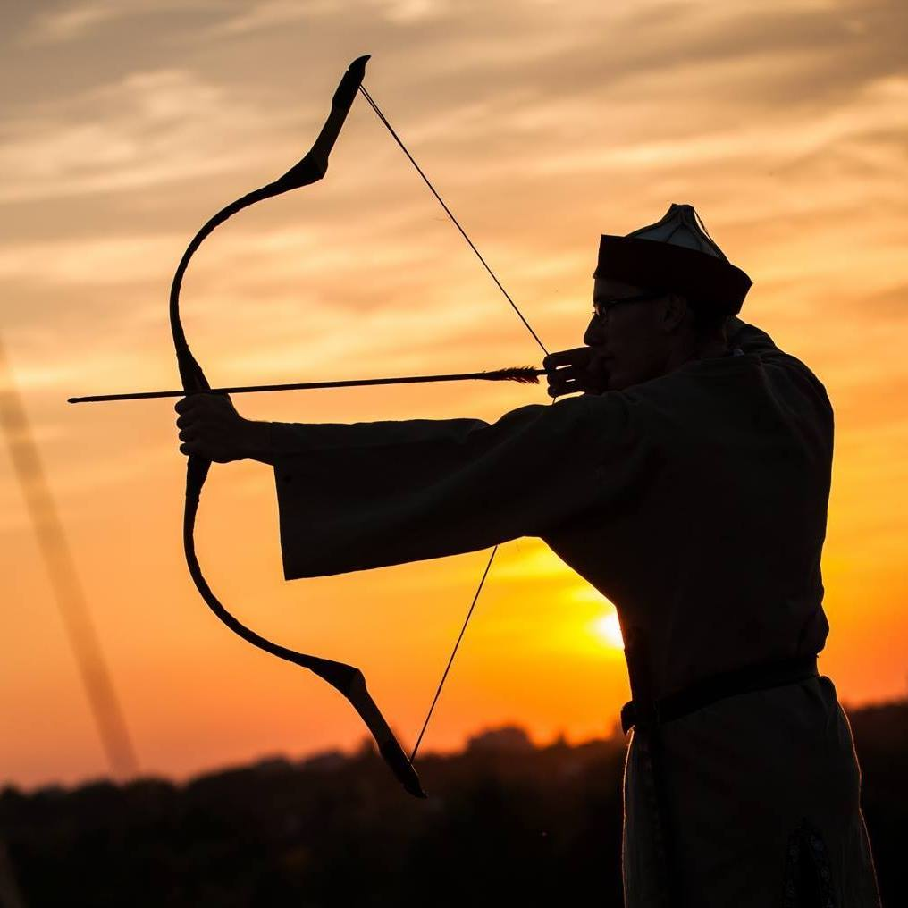
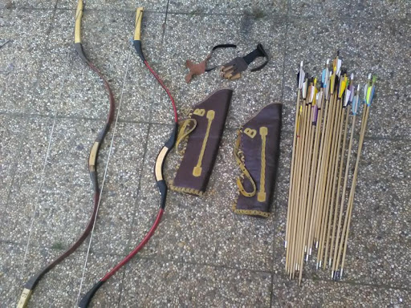
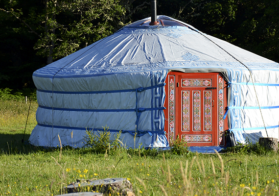
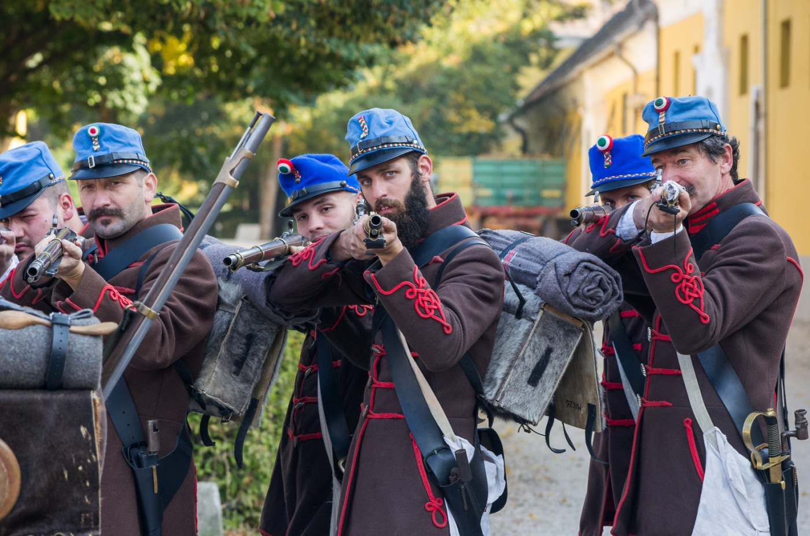
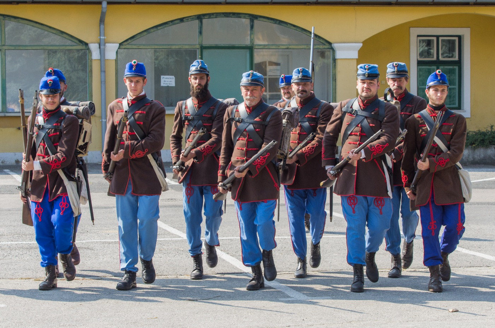
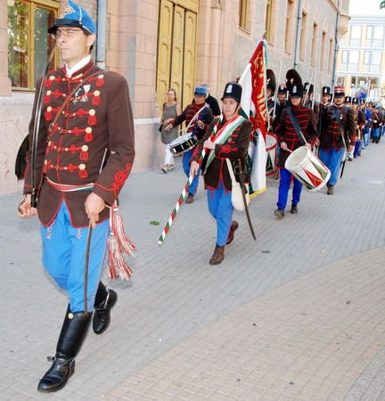

|
Honfoglalás kor
8 éves koromban ismerkedtem meg egy nagyon kedves barátommal, aki bemutatta nekem az íjászat szépségeit. Nagyon megtetszett az íjászat és az előbb említett barátom által tartott tréningeken elkezdtem aktívan részt venni. Az idő múlásával egyre többen lettünk és szép lassan kialakult a mi kis csapatunk. Egy íjászkör, amely már nem csak az íjászattal, hanem a honfoglalás kori ruházattal és a különböző korabeli ékszerekkel, fegyverzetekkel is elkezdett foglalkozni. Ma már több hagyömányörző rendezvény aktív résztvevői vagyunk.    |
1848-49-es forradalom és szabadságharc kora
Az íjászatnál is említett barátom kb. 16 éves koromban elhívott egy másik hagyományörző csapatba, amely már nem a honfoglalással, hanem az 1848-49-es forradalom és szabadságharc korával, azon belül is a harcászati részével foglalkozik. Elkezdtem hát ennek a világnak is a megismerkedésével és nem meglepő módon ez is nagyon megtetszett. Először a 48-as gyalogos alaki gyakorlatot sajátítottam el az összejöveteleken, utána pedig a fegyverkezelés következett. Nagyon hamar belejöttem és mehettem a csapattal a különböző megemlékezésekre, illetve a legjobb részére a dolognak, az 1848-as csaták újrajátszására, melyeket azért rendeznek a hagyományörzők, hogy így állítsanak emléket a régmúlt hőseinek és az általuk megvívott csatáknak.    |